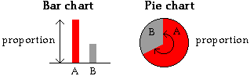

Other displays of categorical data
Two variations of the standard bar chart of categorical data are often encountered. A stacked bar chart is simply a bar chart in which the bars are stacked on top of each other. It is particularly useful when comparing several distributions since the stacked bar charts can be drawn side by side.
In a pie chart, a circle is split into segments according to the proportion of data values in each category. The angle for each category is given by the proportion.

Although pie charts seem visually different from the two types of bar chart, they are closely related.
In bar charts, stacked bar charts and pie charts, the area of ink for any category is proportional to the number of values in that category
Cuckoo eggs
Cuckoos are birds that lay their eggs in the nests of other species then leave them to be raised by the nest's owner. A high proportion of Great Reed Warbler (Acrocephalus arundinaceus) nests are parasitised in this way by the European Cuckoo (Cuculus carnorus) in central Hungary. Ecologists studied several nests and the bar chart below shows the reaction of the 71 Great Reed Warblers that had a single Cuckoo egg laid in their nests. (Egg burial can occur if the cuckoo egg is laid before any of the host eggs and the nest is then built up over this egg.)
Drag the slider to the right to stack the bars of the bar chart.
In the diagram below, drag the slider to change the stacked bar chart into a pie chart.